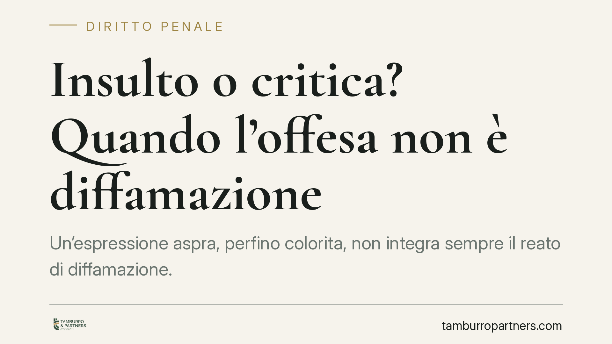

Insulto o critica? Quando l'offesa non è diffamazione
Un'espressione aspra, perfino colorita, non integra sempre il reato di diffamazione. Secondo un consolidato orientamento della Corte di Cassazione, l'offesa resta lecita quando è ancorata a un fatto vero e verificabile, riferito alla condotta della persona. La linea di confine tra critica legittima e reato passa da tre requisiti precisi che vale la pena conoscere.

Il principio
Dare a qualcuno del "troglodita del diritto" può sembrare, a prima lettura, un insulto bello e buono. Eppure la giurisprudenza penale ha chiarito da tempo che non ogni frase sgradevole è penalmente rilevante. Quando l'espressione, pur dura, si collega a un fatto vero e documentabile riguardante il comportamento del destinatario, può rientrare nel legittimo esercizio del diritto di critica.
Il punto non è la cortesia del linguaggio, ma il suo aggancio alla realtà. Una critica può essere feroce e restare lecita; un complimento può nascondere una diffamazione se veicola un fatto falso e lesivo.
Inquadramento normativo
Il reato di diffamazione è previsto dall'art. 595 del codice penale: punisce chi, comunicando con più persone, offende la reputazione di un soggetto assente. L'elemento della comunicazione con più persone è decisivo: senza divulgazione a una pluralità di destinatari non si configura la fattispecie (si pensi, per contrasto, all'ingiuria, oggi depenalizzata).
A bilanciare la tutela dell'onore interviene la libertà di manifestazione del pensiero garantita dall'art. 21 della Costituzione, che si traduce, sul piano penale, nella scriminante dell'esercizio di un diritto di cui all'art. 51 del codice penale. È questo il meccanismo per cui una condotta astrattamente offensiva, se rientra nell'esercizio del diritto di critica, non è punibile.
I tre requisiti del diritto di critica
Secondo un orientamento costante della Cassazione, la scriminante opera quando ricorrono congiuntamente tre condizioni:
- Verità del fatto (o verità putativa): l'affermazione deve poggiare su un dato reale e verificabile. La critica può essere soggettiva e opinabile, ma il nucleo fattuale da cui muove deve essere vero.
- Interesse pubblico: la vicenda deve presentare un rilievo che ne giustifichi la divulgazione. Non ogni fatto vero merita diffusione; serve un interesse della collettività alla conoscenza.
- Continenza: l'espressione, anche aspra, non deve trasmodare nell'attacco gratuito e fine a sé stesso. Il linguaggio può essere pungente purché proporzionato e strumentale alla critica, non diretto a umiliare la persona a prescindere dai fatti.
Quando questi tre elementi coesistono, l'epiteto perde la sua natura puramente offensiva e diventa un giudizio critico lecito, perché collegato a una condotta concreta della persona.
Implicazioni pratiche
Chi scrive su un giornale, su un blog o sui social si muove oggi su un terreno delicato. La diffusione via internet amplifica la portata dell'eventuale offesa e, proprio per la natura pubblica del mezzo, integra con facilità il requisito della comunicazione con più persone richiesto dall'art. 595 c.p.
Il discrimine non sta nel tono, ma nella sostanza. Un'espressione colorita riferita a una condotta realmente tenuta e di interesse pubblico può essere difendibile; la stessa espressione sganciata dai fatti, o costruita su circostanze false, espone a responsabilità penale e civile.
Per chi si ritiene offeso, la valutazione è speculare: prima di querelare conviene verificare se l'espressione sia un attacco gratuito oppure un commento, per quanto sgradevole, ancorato a un fatto vero e divulgabile.
Cosa fare in concreto
- Verifica sempre il fondamento fattuale prima di esprimere una critica: ogni affermazione deve essere documentabile.
- Collega l'espressione a una condotta specifica della persona, evitando l'insulto fine a sé stesso privo di riferimento ai fatti.
- Conserva le prove del fatto su cui si fonda la critica (documenti, articoli, atti pubblici, corrispondenza).
- Valuta il requisito dell'interesse pubblico: non ogni vicenda privata, pur vera, è legittimamente divulgabile.
- In caso di querela, ricevuta o da proporre, è opportuno raccogliere tempestivamente il materiale a supporto e valutare la linea difensiva o d'azione con un legale.
Una precisazione sulle fonti
Il principio qui esposto riflette un indirizzo giurisprudenziale ampiamente consolidato in materia di diritto di critica. Per l'individuazione degli estremi esatti della singola pronuncia più recente si rinvia alla consultazione diretta delle banche dati ufficiali, poiché solo la verifica puntuale del provvedimento consente di citarne con certezza numero e anno.
Contributo informativo a cura di Tamburro & Partners Avvocati — Avv. Giuseppe Tamburro. Non costituisce parere legale.
Ogni condominio ha una storia a sé.
Se gestisci un'amministrazione e vuoi un confronto su una specifica questione condominiale, scrivi allo studio. Ti rispondiamo entro un giorno lavorativo.